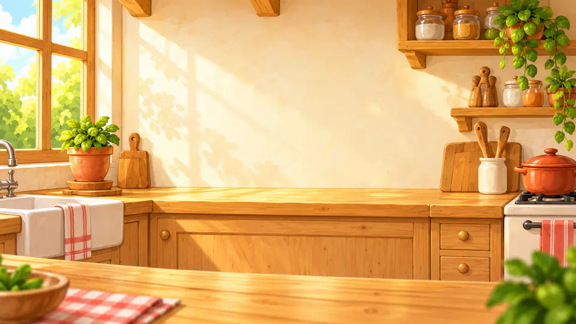

Your browser does not support the canvas tag.
Turn your phone sideways
Cooking Panda plays in landscape. The kitchen waits.
Your browser does not support JavaScript.

Cooking Panda
Heating up the kitchen…